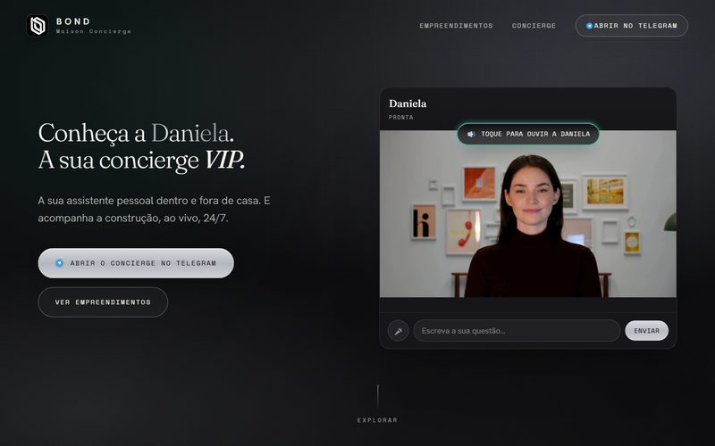
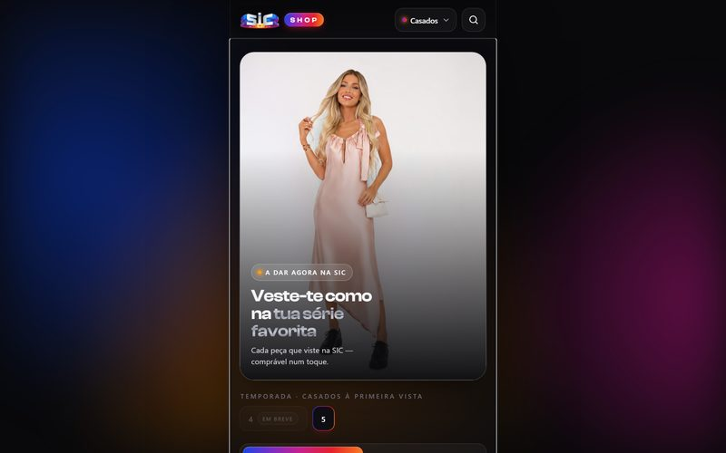
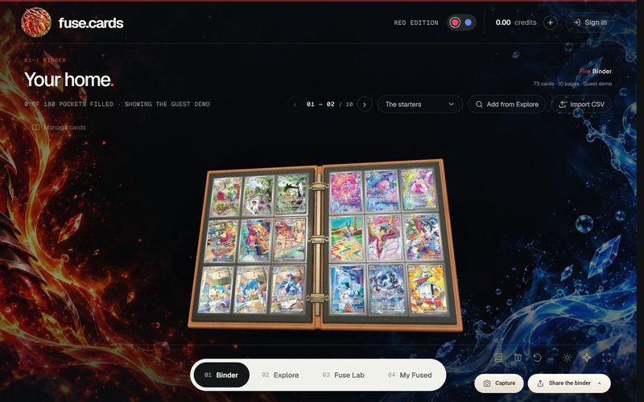
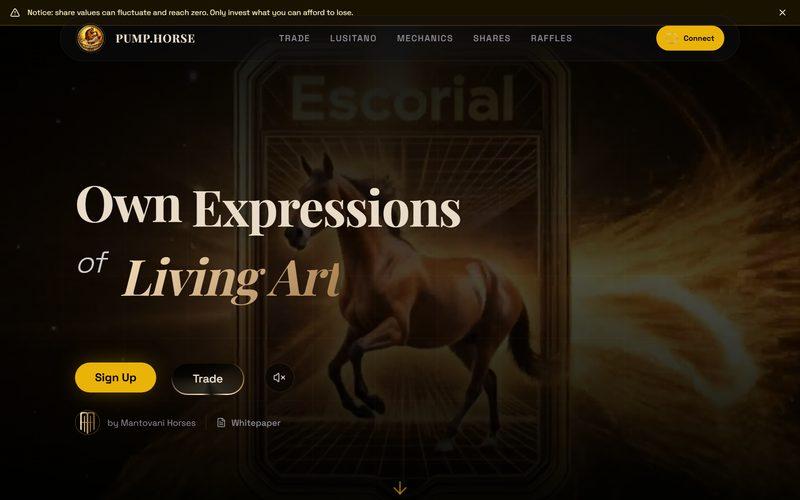
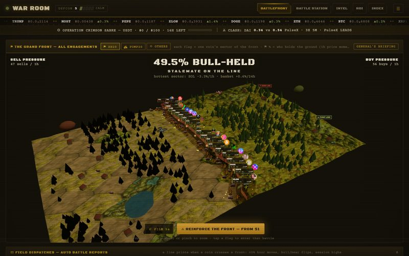
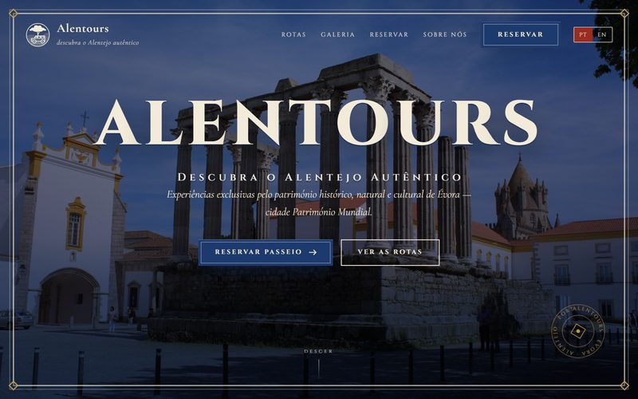
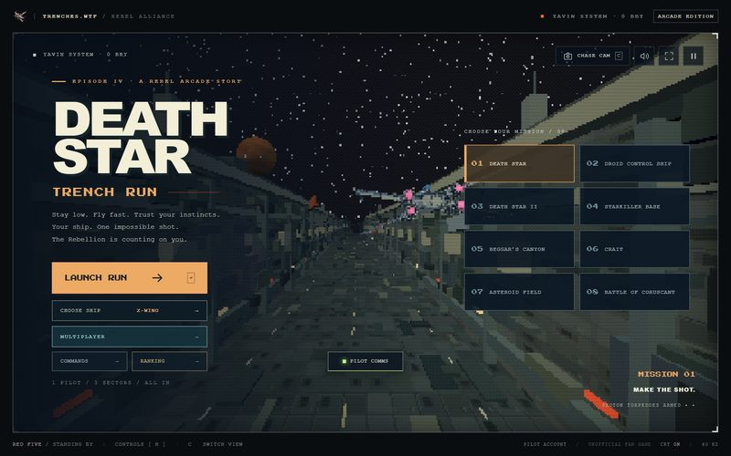

Economista que implementa. Descubro onde a inteligência artificial se paga numa empresa, ponho-a a funcionar em produção e deixo a equipa a saber usá-la.
A prova mais útil que tenho não é uma apresentação: são sistemas meus a correr todos os dias e trabalho já entregue a clientes.
Apresentadores sintéticos com voz clonada, animados a partir de uma única imagem, com montagem, música e legendas automáticas. De um guião a um anúncio pronto a publicar em minutos e por poucos euros — é isso que torna viável conteúdo semanal para um negócio pequeno. Há peças deste tipo com mais de 50 mil visualizações.
A concierge do projeto imobiliário apresenta-se e explica o que faz — a mesma personagem que depois responde no Telegram.
Erros de postura explicados em segundos e o convite para a aula experimental. Produzido de ponta a ponta pelo sistema.
Ambiente, mesa e sala cheia gerados por IA, com a marca aplicada — sem sessão de filmagem.
Narrativa, vozes e imagem geradas por IA para a minha própria operação de marketing local.
A apresentadora em bolha sobre as imagens do próprio centro, com guitarra portuguesa por baixo.
Seis segundos: onde fica a clínica, para quem é, e o convite para marcar.
Exercício explicado sobre imagens reais do estúdio — o formato que alimenta as redes todas as semanas.
Animação em estilo desenho, feita por IA, do género que corre nas redes e traz alcance sem orçamento de meios.
Formatos curtos para um movimento com mais de meio milhão de seguidores, feitos para circular nas redes.
Página de apresentação e venda do livro de Afonso Gonçalves sobre política de imigração, com o contexto e a proposta do autor.
Sistemas que encontram o cliente, falam com ele e só me passam a decisão.
Uma base de cerca de 4.900 empresas, com auditoria automática da presença online de cada uma. O sistema escolhe quem contactar, escreve a mensagem adaptada ao negócio, envia em horários definidos, lê as respostas, classifica-as e prepara a resposta — que só sai depois de eu aprovar no telemóvel. Entregas, aberturas e devoluções são medidas e realimentam as regras.

Uma concierge com voz e vídeo responde no Telegram, apresenta os empreendimentos e acompanha a obra ao vivo, 24 horas por dia.
Transformar conteúdo e coleções em algo que se compra num toque.

Cada peça de roupa vista nos programas fica à venda num toque, organizada por concorrente e por episódio.

Organiza a coleção por páginas, importa listas de cartas e funde duas numa nova, no laboratório de fusão.
Onde a economia do ativo é o produto: desenho económico, mercado e a plataforma que o suporta.

Plataforma da Mantovani Horses: exposição fracionada a cavalos lusitanos de alta competição, com histórico de valorização, participações e sorteios.

Preços ao vivo, índice de retorno e um mapa de batalha que mostra onde está a pressão de compra e de venda.
Sites que vendem a experiência, e experiências que só existem no browser.

Para uma empresa familiar de Évora: passeios de Land Rover pelo Alentejo, com rotas, galeria e marcação online em português e inglês.

Corrida 3D pela trincheira, com multijogador e classificações — um teste ao que cabe dentro de uma página web.
A maioria das empresas que se aproxima da IA fica entre dois maus conselheiros: um vende uma demonstração que nunca chega a produção; o outro vende uma apresentação de estratégia sem ideia do que custa implementar.
Passei nove anos no meio pouco glamoroso desse problema, com uma tecnologia que chegou uma década antes e cometeu os mesmos erros. Que processos vale mesmo a pena automatizar. Quanto custa a integração. O que é que parte. Quem precisa de formação e quem resiste em silêncio. Fui economista antes de ser tecnólogo, por isso avalio trabalho em período de retorno — e depois dirigi a equipa que teve de o entregar.
Sobre financiamento: nos apoios do PRR e do Portugal 2030 para digitalização e IA, a consultoria e a formação contam como despesa elegível, e não apenas o software. Quem já tem projeto aprovado tem prazo para executar e obrigação de o documentar — que é exatamente onde entro.
ISCTE Business School, Lisboa · 2008–2013
Assistente de investigação em blockchain na cadeia de abastecimento, University of Huddersfield (2019).
Diga-me o que a sua equipa faz mais vezes por semana. Digo-lhe se há aí um caso de IA que se pague — e se não houver, também lho digo.
Escrever um email WhatsApp 936 882 364An economist who ships. I work out where artificial intelligence actually pays back in a company, put it into production, and leave the team able to run it.
The most useful proof I have is not a slide deck: it is systems of mine running every day, and work already delivered for clients.
Synthetic presenters with cloned voices, animated from a single still image, with automated editing, music and captions. From script to a publishable ad in minutes and for a few euros — which is what makes weekly content viable for a small business. Pieces like these have passed 50,000 views.
The development's concierge introduces herself and explains what she does — the same character who then answers on Telegram.
Posture mistakes explained in seconds, then the invitation to a trial class. Produced end to end by the system.
Room, table and full house generated by AI, with the brand applied — no shoot required.
Story, voices and footage generated by AI for my own local-marketing operation.
The presenter in a bubble over the centre's own footage, with Portuguese guitar underneath.
Six seconds: where the clinic is, who it is for, and the invitation to book.
An exercise explained over real footage of the studio — the format that feeds the social accounts every week.
Cartoon-style AI animation, the kind that travels on social and buys reach without a media budget.
Short formats for a movement with more than half a million followers, built to travel on social media.
Landing and sales page for Afonso Gonçalves' book on immigration policy, with the author's context and proposal.
Systems that find the customer, talk to them, and hand me only the decision.
A database of roughly 4,900 companies, each with an automated audit of its online presence. The system picks who to contact, writes a message fitted to that business, sends on a schedule, reads the replies, classifies them and drafts the answer — which only goes out once I approve it from my phone. Deliveries, opens and bounces are measured and feed back into the rules.
A concierge with voice and video answers on Telegram, walks buyers through the developments and follows the construction live, around the clock.
Turning content and collections into something you can buy in one tap.
Every garment worn on the shows is buyable in one tap, organised by contestant and by episode.
Organise a collection across pages, import card lists, and fuse two cards into a new one in the fuse lab.
Where the asset's economics are the product: economic design, the market, and the platform under it.
Mantovani Horses' platform: fractional economic exposure to elite Lusitano dressage horses, with price history, shares and raffles.
Live prices, a return index and a battle map showing where the buying and selling pressure sits.
Sites that sell the experience, and experiences that only exist in the browser.
For a family business in Évora: Land Rover tours across the Alentejo, with routes, gallery and online booking in Portuguese and English.
A 3D trench run with multiplayer and leaderboards — a test of how much fits inside a web page.
Most organisations approaching AI are stuck between two bad advisers. One sells a model demo that never reaches production. The other sells a strategy deck with no idea what implementation costs.
I spent nine years in the unglamorous middle of exactly that problem, for a technology that arrived a decade earlier and made all the same mistakes. Which processes are genuinely worth automating. What the integration really costs. What it breaks. Who needs retraining, and who quietly resists. I was an economist before I was a technologist, so I scope work in payback period rather than parameter count — and I then ran the engineering division that had to deliver it.
On funding: under Portugal's PRR and Portugal 2030 digitalisation and AI support lines, consultancy and training are eligible spend, not only software. Companies with an approved project have a deadline to execute and an obligation to document it — which is exactly where I come in.
ISCTE Business School, Lisbon · 2008–2013
Research assistant, supply-chain blockchain, University of Huddersfield (2019).
Tell me what your team does most often in a week. I will tell you whether there is an AI case in there that pays for itself — and if there is not, I will tell you that too.
Send an email WhatsApp +351 936 882 364